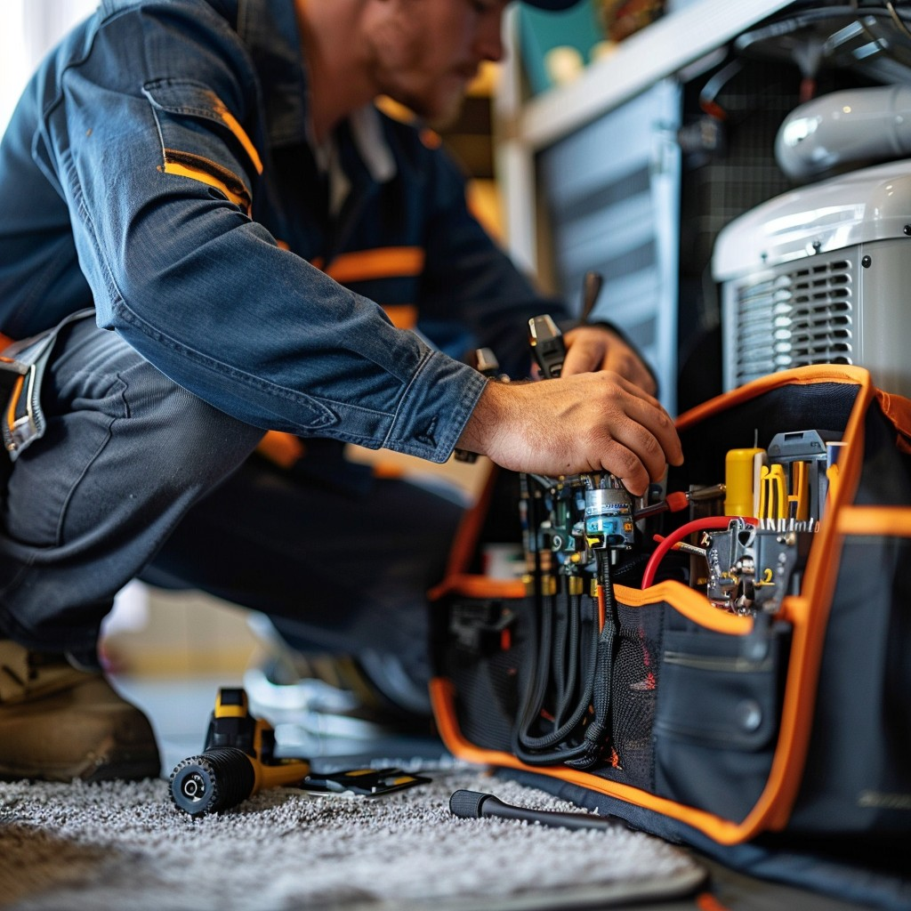

Fast, reliable HVAC service for homeowners across Licking County. Furnace repair, AC service, and full system installations — backed by local expertise and honest pricing.
No obligation. We respond within 2 hours.
When your furnace stops working in January or your AC gives out in August, you need someone who knows Licking County — and can get there fast. We serve Newark, Heath, Granville, Pataskala, Utica, Buckeye Lake, Hebron, Johnstown, New Albany, and the surrounding communities with honest, reliable HVAC service.
No national call centers. No surprise fees. Just qualified local technicians who show up on time, diagnose the problem accurately, and fix it right the first time — whether you're in a Newark ranch home or a Granville farmhouse.

Furnace not heating? Strange noises or smells? Our technicians diagnose and repair all makes and models of gas, electric, and oil furnaces in Newark, Heath, Utica, Johnstown, and throughout Licking County.
Learn More →When your air conditioning fails in the heat of an Ohio summer, we respond fast. We repair all brands of central air systems and heat pumps in Granville, Pataskala, Buckeye Lake, Hebron, and across Licking County.
Learn More →Ready to replace an aging system? We install high-efficiency heating and cooling systems sized correctly for your home. Honest quotes, no-pressure consultations.
Learn More →Keep your furnace running efficiently all winter. Annual tune-ups catch small problems before they become expensive breakdowns — and lower your monthly energy bills.
Learn More →HVAC emergencies don't wait for business hours. We offer emergency heating and cooling service across Licking County — day, night, weekends, and holidays.
Learn More →Heat pumps are becoming the standard in Ohio homes. We install, repair, and maintain all major heat pump brands — keeping your home comfortable year-round.
Learn More →We serve homeowners and businesses throughout Licking County, Ohio. If you're not sure we cover your area, just call — we'll let you know right away.
We're not a Columbus company with a service area page. We're based in Licking County and serve Newark, Heath, Granville, Pataskala, Utica, Buckeye Lake, Hebron, Johnstown, and New Albany. We know the systems, the neighborhoods, and the conditions.
We give you a clear estimate before any work begins. No hidden fees. No upselling you equipment you don't need. Just honest pricing for the work that actually needs to be done.
When your heat goes out, waiting days isn't an option. We offer same-day appointments and 24/7 emergency service so you're never left in the cold — or the heat.
"Called at 11pm on a Thursday in February — furnace was completely out. Technician was at our house in Newark by 1am and had heat back on by 2:30. Saved us. Can't thank them enough."
"Got three quotes for a new system. Licking County HVAC came in fair, explained everything clearly, and actually showed up when they said they would. Install in Heath went perfectly. Very happy."
"AC went out the week before Fourth of July. Called in the morning, they were out to our place near Granville by early afternoon. Quick fix, fair price, no upsell. Would absolutely call again."
Not sure what's wrong with your system — or whether to repair it or replace it? These guides answer the questions Licking County homeowners ask most.
Step-by-step guide to diagnosing why your furnace won't start or is pushing cold air — and what to check before calling a technician.
Read the Guide →Why your air conditioner runs but doesn't cool — from dirty filters and frozen coils to refrigerant issues — and when it's time to call.
Read the Guide →The honest framework for deciding when repair makes financial sense and when replacement is the smarter long-term investment.
Read the Guide →Real price ranges for furnace repair, AC repair, new system installation, and heat pumps in Licking County, Ohio. No fluff.
Read the Guide →